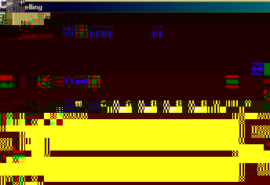

| |
|
Über AbiWord Einführung Über Open Source Index Inhalt Warum AbiWord? Terminologie Arbeitsplatz SDI gegen MDI Installation Linux Intel Linux PPC BeOS Intel BeOS PPC Solaris FreeBSD Erste Schritte Befehle editieren Text eingeben Formatieren Absätze Tabulatoren Die Spalten Die Abschnitte Stile Objekte einfügen Suchen und Ersetzen Einstellungen Abkürzungen abisource.com FAQ Credits Suchen |
Text eingebenNachdem Sie ein neues AbiWord-Dokument erstellt haben, könne Sie den Text auf der leeren Seite einfügen. Fangen Sie an zu schreiben und die Buchstaben werden automatisch an der Stelle eingefügt, an der sich der Cursor bedindet. Der Cursor schreitet mit jedem Buchstaben um eine Position voran. Die ÜBERSCHREIBEN-Funktion wird durch Drücken der "INSERT"-Taste aktiviert. Nun werden die Buchstaben unter dem Cursor überschrieben.Einen neuen Absatz beginnen Sie, indem Sie einfach die "Enter"-Taste drücken. Die "Enter"-Taste benötigen Sie nicht, um eine neue Zeile anzufangen. Der Zeilenumbruch wird von AbiWord automatisch durchgeführt, wenn der Text den rechten Rand erreicht hat. Dies ist das Hauptprinzip einer jeden Textverarbeitung. Sie könne jedoch von Hand einen Zeilenumbruch erzwingen, indem Sie die "Shift" und "Enter"-Taste gleichzeitig drücken. Dies erzeugt keinen neuen Absatz. RechtschreibprüfungManchmal machen Sie Tippfeler. Um diese zu verbessern benutzen Sie:* Die "Backspace" Taste über der "Enter" Taste). Diese löscht das Zeichen VOR dem Cursor. I.Wenn Sie ein Wort oder einen Textbereich mit der Maus auswählen und anschließend "Backspace" oder "Delte" drücken, so wird der gesamte Bereich gelöscht. Ist ein Word falsch geschrieben, so unterstreicht AbiWord das Wort um dieses anzuzeigen. Hier ist zum Beispiel das Word
juxtaposition: Um ein Wort, das rot unterstrichen ist, zu verbessern, klicken Sie mit der rechten Maustaste auf das Wort. Ein Menu öffnet, das eine Auswahl von Wörtern anbietet. Ist das korrekt geschreibene Wort dabei, so klicken Sie auf dieses und das Wort wird eingefügt.
Wenn AbiWord keinen Vorschlag macht, dann hat AbiWord kein ähnlich geschriebenes Wort in seinem Wörterbuch gefunden. Nun sollten Sie 'von Hand' prüfen, ob das Wort richtig geschrieben ist. Es gibt 2 Möglichkeiten:
 * Der Ignore Knopf wird es nicht mehr unterstreichen und die Prüfung fortführen.Es gibt verschiedene Möglichkeiten, die Rechtschreibprüfung zu starten:
Statistiken über das aktuelle DokumentSie können verschiedene Statistiken über ein aktuelles Dokuemt erhalten. Dies ist insbesondere für große Dokumente von Nutzen. AbiWord kann eine Zusammenfassung oder einen Report erzeugen. Die Anzahl der Seiten oder Wörter können von Interesse sein. Sie aktivieren dies, indem Sie im "Tools" Menu "Word Count" anklicken. Ein Fenster so ählich wie das folgende wird erscheinen: Dieses Fenster gibt Ihnen verschiedene Informationen wie die Anzahl der Seiten, die Anzahl der Worte, die Anzahl der Buchstaben (ohne die Leerzeichen), die Anzahl der Absätze und zuletzte die Anzahl der Zeilen des gesamten Dokuments. Mit dem "Close" Knopf wird das Fenster geschlossen. Die Zoom FunktionWährend der Dateneingabe oder vor dem Drucken können Sie das Dokument zoomen, um eine Gesamtansicht zu erhalten oder das vergrößerte Dokument zu sehen. Es gibt hierfür 2 Möglichkeiten:* Klichen Sie auf den kleinen Pfeul rechts von der Zoom Liste in der Standard Werkzeugleitste und wählen Die die Zoomgröße aus der Liste aus. |